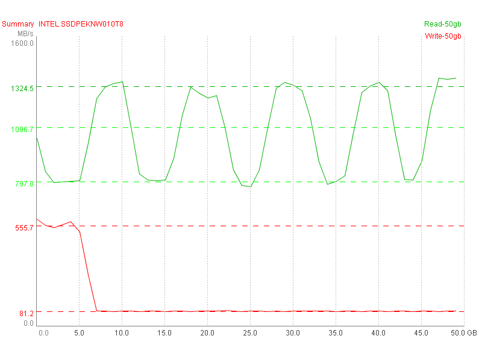
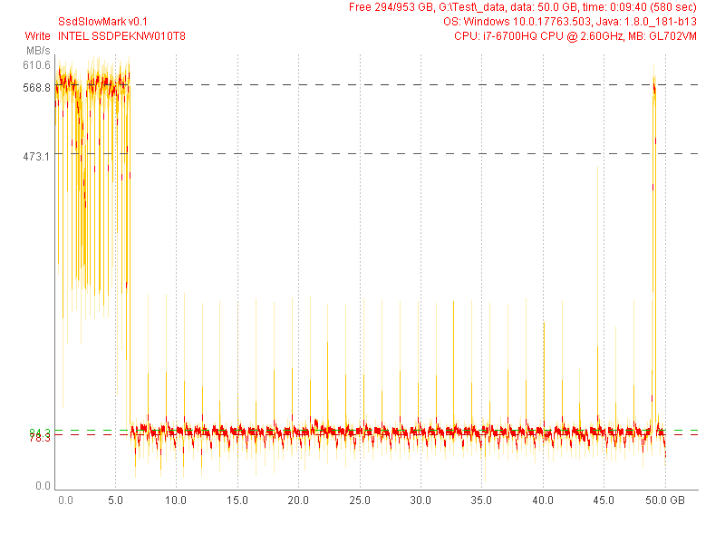
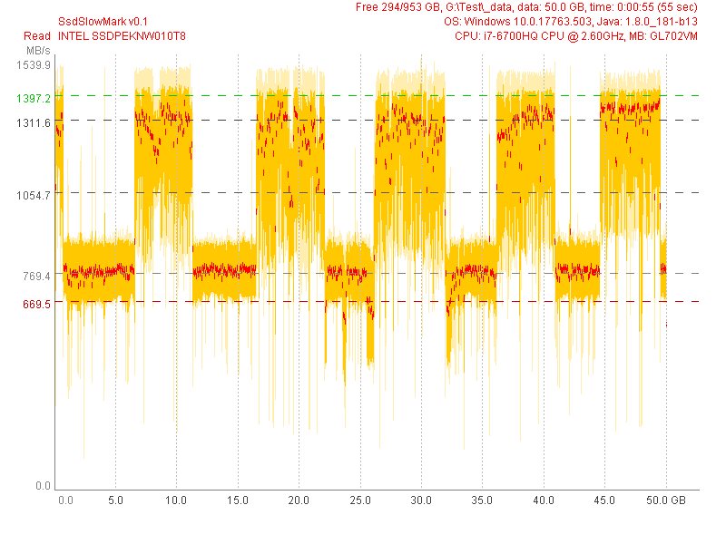

INTEL SSDPEKNW010T8 (Test 50 GB) |
|
| SsdSlowMark v0.1, CPU: i7-6700HQ CPU @ 2.60GHz, MB: GL702VM, OS: Windows 10.0.17763.503, Java: 1.8.0_181-b13 | |
| Read Performance | Write Performance |
avg.max: 1311.6 MB/s, 49.9% (24.9 GB)
mid: 1054.7 MB/s, 19.7% (9.9 GB)
min: 769.4 MB/s, 47.2% (23.6 GB)
typ.max: 1397.2 MB/s, 47.0% (23.5 GB)
typ.min: 669.5 MB/s, 46.7% (23.4 GB)
|
avg.max: 568.8 MB/s, 11.4% (5.7 GB)
mid: 473.1 MB/s, 6.4% (3.2 GB)
min: 78.3 MB/s, 87.1% (43.6 GB)
typ.max: 84.3 MB/s, 87.1% (43.6 GB)
typ.min: 78.3 MB/s, 87.1% (43.6 GB)
|
|  | |
|  | |
|  | |